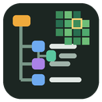
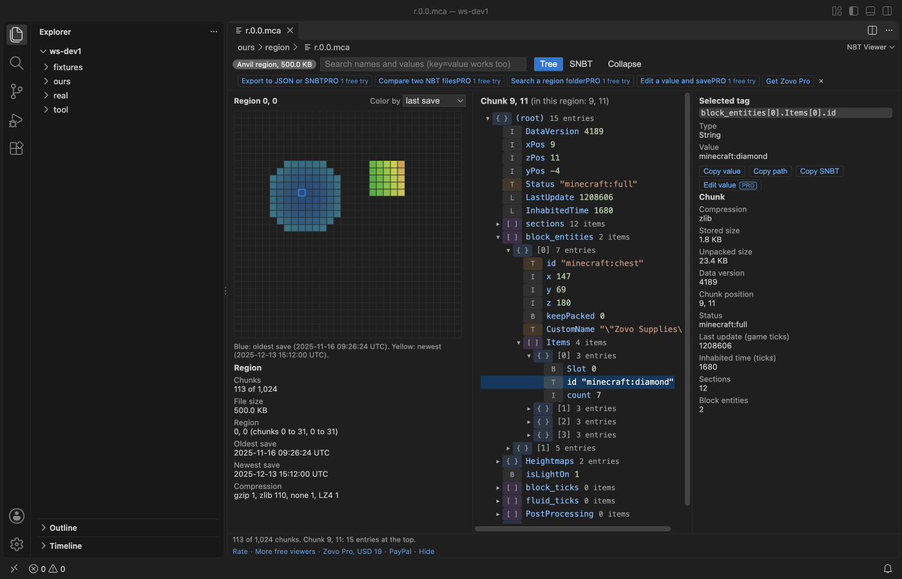

NBT Viewer & Minecraft Region
NBT Viewer & Minecraft Region, a VS Code extension by Zovo
Open Minecraft NBT files, region files and schematics in VS Code as a tag tree, with SNBT text, search and a chunk grid. Made by Zovo.
Free, MIT license. Needs VS Code 1.75.0 or newer. Extension ID zovo.zovo-nbt-viewer, version 0.1.1.

Free, with no account and no network calls:
- Opens .nbt files and other NBT data: Java Edition (big-endian) and Bedrock Edition (little-endian, with or without the level.dat header), gzip, zlib or not compressed. The format is found from the bytes.
- level.dat, player .dat files and .dat_old files open with Open as NBT (Explorer right-click or the Command Palette). A .dat file never opens here by default, so other programs' .dat files keep their own editor.
- .mca and .mcr region files open as a 32 by 32 chunk grid, colored by last save, size or compression. Click a chunk to see its tags. Chunks packed with gzip, zlib, LZ4 or nothing are read, and so are chunks kept in .mcc files next to the region file.
- .schem (Sponge versions 1 to 3), .schematic, .litematic, structure .nbt and Bedrock .mcstructure files show their size, their metadata and a count of every block next to the tree.
- A tree view with the type of each tag and the size of every compound, list and array. Long lists open in pages of 300.
- An SNBT text view of the selected tag, with Copy SNBT, Copy path and Copy value.
- Search in tag names and values.
key=valuefinds tags with that name whose value contains the text.
Zovo Pro: USD 19 once, for the Pro tools in every Zovo extension. Each Pro tool has 1 free try on your computer first:
- Export to JSON or SNBT: write an NBT file, a schematic or a whole region file to a .snbt or .json file. SNBT indented or on one line, plain JSON, or JSON that keeps every NBT type.
- Compare two NBT files: two NBT files or two region files, tag by tag. Every added, removed and changed value is in a table, and the report saves as Markdown.
- Search a region folder: find a tag name or value (or
key=value, for exampleid=minecraft:chest) in every chunk of every region file in a folder. The hits come as a table with the chunk coordinates and save as CSV. - Edit a value and save: change a number or text value in an NBT file or in a region chunk. The file is saved in its own format, after a .bak copy of the file as it was.
Questions people ask
Is NBT Viewer & Minecraft Region free?
Yes. NBT Viewer & Minecraft Region is free and MIT licensed.
How do I install NBT Viewer & Minecraft Region?
Click "Install in VS Code" above, or search for zovo.zovo-nbt-viewer in the Extensions view.
How to use it
- Click a .nbt, .mca, .mcr, .schem, .schematic, .litematic or .mcstructure file. It opens in the viewer.
- For level.dat or a player file, right-click it in the Explorer and pick Open as NBT, or run NBT: Open as NBT from the Command Palette. Reopen Editor With also lists the NBT Viewer for .dat files.
- Click the arrow of a tag to open it, and click a tag to see its path, type and value on the right. The arrow keys move through the tree.
- SNBT in the toolbar shows the selected tag as SNBT text. Tree goes back.
- Type in the search box. Click a match to open the tree at that tag. In a region file the search covers the selected chunk.
- In a region file, click a cell of the grid to load that chunk. "Color by" switches between last save, size and compression.
- To try it without your own files, run NBT: Open the Sample level.dat, NBT: Open the Sample Region File or NBT: Open the Sample Litematic.
- The Pro tools are in the Command Palette (NBT: ... (Pro)), in the Explorer right-click menu, in the viewer's title bar menu and in the small row at the end of the viewer toolbar. Edit value is also a button next to the selected value. The row closes with its x for the rest of the session, and the setting
nbtViewer.showProToolshides the Pro tools for good.
What the viewer shows
Strings in Java files are read as Java writes them (modified UTF-8), so names with accents or emoji show as they are. A long tag shows its value in hex as well, and an int array of 4 values shows as a UUID too.
The chunk grid has one cell per chunk. Empty cells are chunks the game has not saved. A cell with stripes has a damaged location in the region header, and the header problems are listed under the grid. A chunk that cannot be unpacked shows its own message, and the other chunks stay readable.
For schematics the block count comes from the block data itself: the varint data of Sponge files, the packed states of .litematic regions, the block list of structure files and the first block layer of .mcstructure files. Classic .schematic files store numeric block ids, so the list shows the ids.
A file that is not NBT gets a short message with the reason and a button to reopen it with another editor. Nothing pops up.
Privacy
The extension reads the file you open and nothing else. It makes no network calls, and nothing is uploaded or measured. The viewer never writes to your files; only Edit a value and save does, when you press Enter, and it writes the .bak copy first. The links at the bottom of the viewer (Rate, More free tools, Zovo Pro) open a page only when you click them, and the setting nbtViewer.showSupportLinks hides them.
Settings
| Setting | Default | What it does |
|---|---|---|
nbtViewer.showProTools | true | Shows the Pro tools in menus, the palette and the toolbar row. |
nbtViewer.showSupportLinks | true | Shows the Rate, More free tools and Zovo Pro links. |
nbtViewer.askForRating | true | Asks once for a rating after two good uses at least 30 minutes apart. |
zovo.nbt.trial.enabled | true | Shows the 7-day Zovo Pro trial button in the Pro panel. |
Zovo Pro
One payment of USD 19 unlocks the Pro tools in every Zovo extension on your computers; a team of 5 is USD 59. The key works offline. Run Zovo Pro: Get Zovo Pro from the Command Palette. The Zovo Pro tab lists this extension's Pro tools and your free tries before any payment page opens.
The Pro panel opens only when you click a Pro tool whose free try is used. It also has a button for a free 7-day trial of all Pro tools, with no card. The trial starts only when you click that button, and it ends on its own.
Install NBT Viewer & Minecraft Region
Click the button to open VS Code and install it, or press Ctrl+P (Cmd+P on macOS) in VS Code and run ext install zovo.zovo-nbt-viewer.
Free, MIT license. Needs VS Code 1.75.0 or newer. Extension ID zovo.zovo-nbt-viewer, version 0.1.1.
Source code and issues are on GitHub.
Zovo Pro and support
Zovo Pro: USD 19 once, every Zovo viewer. It turns on the Pro tools in this extension and in the other Zovo extensions you use. The free features stay free.
After a card payment your license key shows on the next page. Paste it with the command "Zovo Pro: Enter a key".
You can also support the work with no Pro:
Need your format supported?
Open a format request with a sample file, and I reply there whether it can be done. For USD 299 once, through this GitHub Sponsors tier, I add your file format or a missing feature to this extension, with tests, within 7 days.